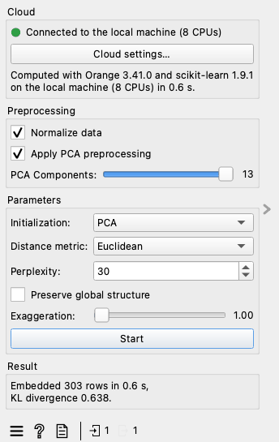

A t-SNE map of all rows of a cloud table, computed on the machine. View it with Cloud Scatter Plot.

Like every Cloud widget, it has a Cloud box at the top: whether a machine is connected, Cloud settings… and Stop machine, and what the last job ran with, how long it took and what it cost. See Cloud widgets.
The options are those of Orange's t-SNE: normalizing, PCA preprocessing and its number of components, the initialization, the distance metric, the perplexity, "Preserve global structure" and the exaggeration. New data starts the embedding; after you change an option, click Start. While it runs, Stop cancels it.
The widget doesn't draw the map. Connect its output to Cloud Scatter Plot and choose t-SNE-x and t-SNE-y as the axes.
t-SNE is slow on big data: roughly 1.4 ms per row on 8 cores, so 100,000 rows take a few minutes. The widget warns when it expects a minute or more. Above about 1,000 rows it uses approximate nearest neighbours, so the map is as good as Orange's but not the same numbers.